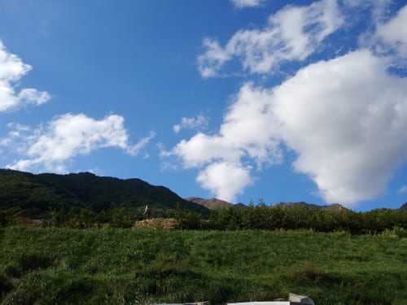
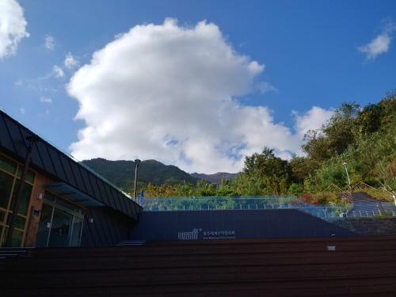
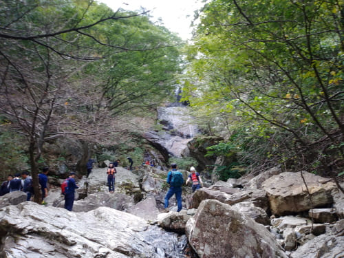
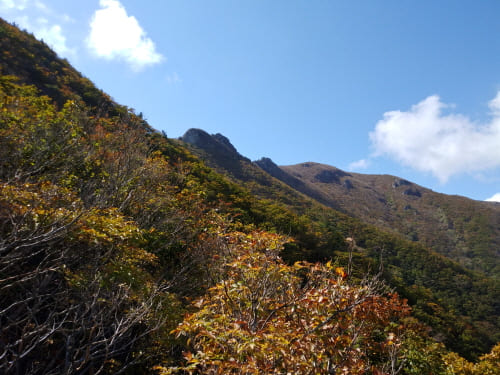
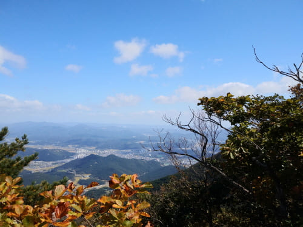
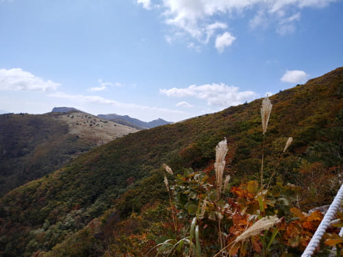
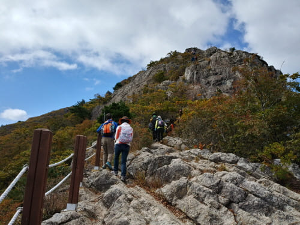
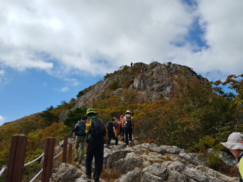
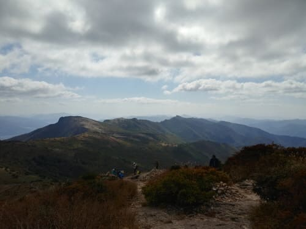
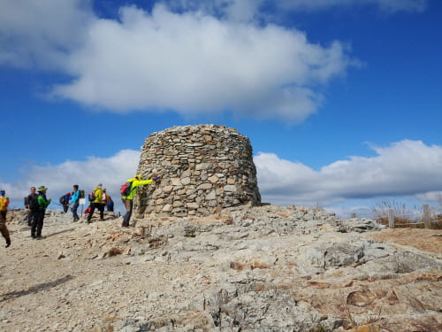

Gallery
상행구간

신불산 주차장
주차장에서 본 흰구름의 신불산

신불산 주차장
주차장에서 본 흰구름의 신불산

홍류폭포
신불산 칼바위 공용능선길과 간월재가는 길로 나뉜다

칼바위 산행중
한숨돌리며 경치에 취한다

말칼바위 산행중
멀리 도시가 보인다

칼바위 산행중
얼마나 남았는지 숨이차다

칼바위 능선
험한 산길이나 아름답다

칼바위 능선
아름답다

능선을 지나서
암반길은 지났네

신불산 정상
드디어 만세!